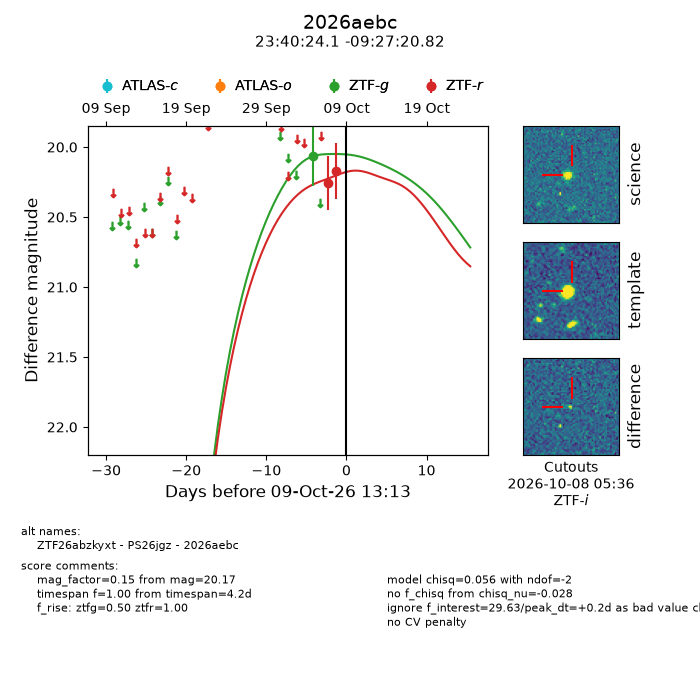
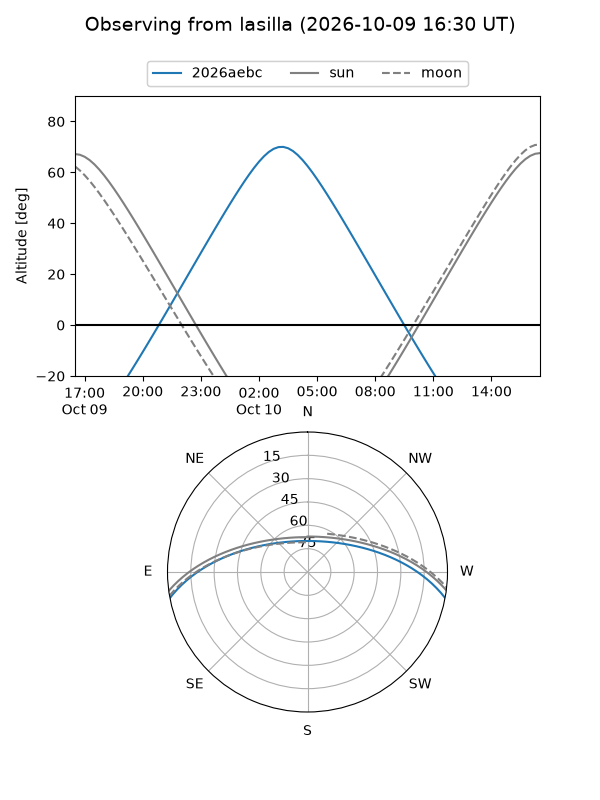
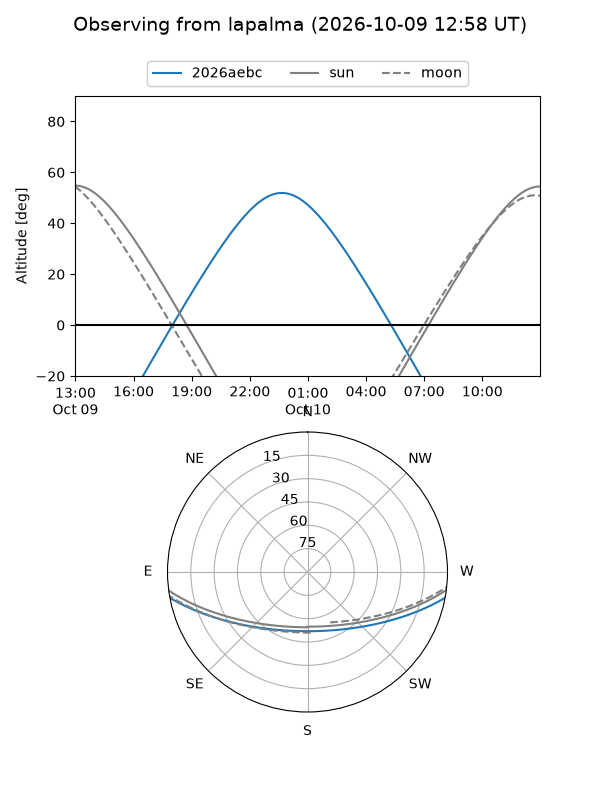
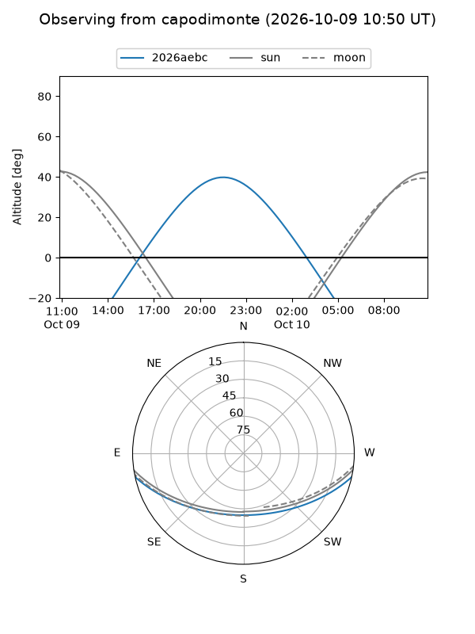
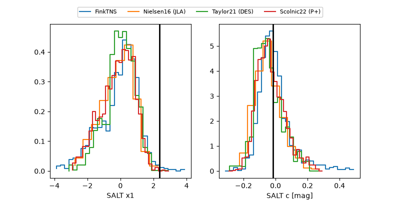

2026aebc
Target 2026aebc at 2026-10-09 13:16
Aliases and brokers:
FINK-ZTF: ztf.fink-portal.org/ZTF26abzkyxt
Lasair-ZTF: lasair-ztf.lsst.ac.uk/objects/ZTF26abzkyxt
ALeRCE-ZTF: alerce.online/object/ZTF26abzkyxt
YSE-PZ: ziggy.ucolick.org/yse/transient_detail/2026aebc
TNS name: wis-tns.org/object/2026aebc
Direct TNS query: direct search
alt names
ZTF26abzkyxt (ztf,fink_ztf)
2026aebc (tns,yse)
PS26jgz (panstarrs)
Coordinates:
equatorial (ra, dec) = 355.1004,-9.45578
equatorial (HMS+DMS) = 23:40:24.10,-09:27:20.82
galactic (l, b) = (76.0920,-65.64024)
Flags:
peak dt: +0.2
Photometry:
last ztfg=20.07, ztfr=20.17
1 ztfg, 2 ztfr detections
Lightcurve

Visibility



Additional plots
